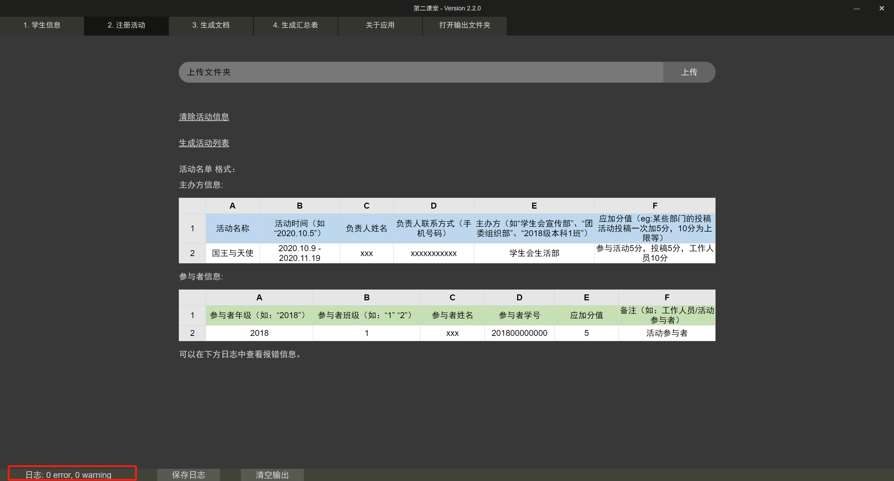

1 准备事项
在最终生成Word文档和Excel汇总表前，请先完成以下事项:
1.1 登记学生信息
在软件的学生信息部分，上传Excel表格，完成学生信息的登记。只需要在学生名单发生变动时完成这项工作。成功上传后，会看到如下图中红色部分的"名单已上传"字样。
如果需要删除已经上传的学生信息，则只需点击下方的清除学生信息即可（但这通常是没有必要的，因为上传新的学生信息的文件时会自动覆盖旧的信息文件）。
登记学生信息的作用在于后续登记活动的时候核验学生身份以及生成word文档和汇总表，在没有登记学生信息前打开注册活动等标签会提示用户需要先对学生信息进行登记。
1.2 注册活动
这是整个工作过程中最耗时、最麻烦的部分，不出意外也是最容易出bug的地方。
对于需要被纳入最终计算的活动，需要先对其进行注册，该操作在软件的注册活动部分进行，用户需要上传记录活动信息的Excel表格，可以一次上传多个文件（点击上传），也可以上传一个文件夹（点击上传文件夹；文件夹可以是嵌套的）。
如果要清除所有注册的活动，可以点击下方的清除活动信息。不同于注册学生信息部分中的清除注册的学生信息功能，这里清除注册过的活动信息是十分必要的，因为应用会对活动进行重复注册。
我们也可以点击下方的生成活动列表来获取当前所有注册的活动的信息，这些信息会以一个excel文件的形式存放在输出文件夹下（位于软件安装目录的resources/app/output文件夹下），这个文件夹可以通过点击上方标签栏中的打开输出文件夹进行访问。
然而很不幸的是，事情并不总是一帆风顺的，提交上来的活动信息表永远会出现一些问题，它们包括但不限于：
- - 学生名单中学生姓名用的是繁体字，但活动信息中姓名用的是简体字
- - 活动名单中的某名学生已经毕业了 / 不是心理学部的但参加了活动；总之这名学生不在注册的学生名单中
- - 记录活动的excel不符合格式要求，比如缺少主办方信息，姓名学号两列写反了等
- - 特别地，因为有转班的情况存在，会出现学生班级不匹配的问题
以上情况中，除了班级不匹配的情况，其他任何信息不匹配的情况都会导致活动信息的解析过程停止（指停止当前解析当前excel文件，开始解析下一个文件），并在下方的"终端"（姑且称之为终端吧）中打印报错消息；班级不匹配的情况会在终端中打印一条警告消息。如果你使用过任何一个现代的ide，应该能够轻松找到这个所谓终端在哪里；但如果你编程经验较为匮乏，可以看下图红色部分圈出的地方，点击那里就可以调出终端。

和程序员一样，我们其实并不需要关心warning，只需要去关心error就好。如下图，终端中用红色标注出来的就是错误的条目，包含了出错的文件路径、出错的学生信息以及可能的修改建议；修改建议中高亮的部分是与活动信息中不匹配的内容。
特别地，一定要注意文件格式！如果你只是把两列内容写反了，可能只是会导致终端里throw了百八十个error，但是如果文件少了或多了点什么，可能会导致程序整个卡死——解析活动的时候，任务栏会显示进度条，如果你看到进度条停在中间不动了，不用怀疑，程序卡死了，因为这个应用处理上百个文件也用不了多久。如果你有过web前端开发经验，可以按F12打开开发者工具看一下，如果有报错，那确实是出大问题了。这个时候，你要做的是，先看一下终端里解析到哪里了（方便我们去排查哪个文件出问题了），然后按F5或者是Ctrl + r刷新一下页面。
2 生成文件
这一步的操作就很简单了，在注册学生信息和活动信息后，我们只需要点击生成文档和生成汇总表页面下的开始生成，即可生成文档。我们可以点击最右侧的打开输出文件夹进入到这些生成好的文件存放的路径。
3 注意事项
除了前面所说的注意文件格式以外，还有一点需要强调的是，不要随便到安装目录里删东西，哪怕是空文件夹也不要随便删掉。你唯一可以放心操作的文件夹就是存放生成的word文档、excel文件的那个文件夹，但也请注意，不要把这个文件夹删掉。
我并不是科班出身的，写代码什么的也纯属个人爱好，所以我也不敢保证我这个程序能够100%考虑到所有可能出错的情况。就像上面所说的，什么文件格式不对可能会造成程序卡死，还有活动信息表中活动名称包含特殊字符（因为我会用这个作为活动解析后的json文件名）、活动分值不是纯数值等情况，虽然我也都对这些情况做了一些预防措施，但bug总会以意想不到的方式找上门来，所以，如果出现了什么奇怪的错误，也请海涵。对于那些实在解决不了的问题，你也可以直接联系我，或者在GitHub上面提issue。
作者：姜绍彬
Github：https://github.com/Shaobin-Jiang/Second-Classroom
联系方式：邮箱 - shaobin-jiang@outlook.com; QQ - 2359840487